iTest User's Guide
The Data Quality feature is a runtime verification tool that enables you to define data quality limits for channels in your system. The channels are continuously monitored and if they exceed the defined limit, the violation is communicated via the interface. Data quality limits are different than safety limits, and are used in the following ways:
iTest continually monitors channels to determine whether their current values match a pre-defined rule. If the channel value violates the rule, the following actions are performed:
DQHandlerDefault, although this can be replaced by another procedure)The following evaluations used to determine the quality of the data:
To configure and use the Data Quality feature, complete the following procedure using the Test Manager channel definition editor:
Data Quality Fields Descriptions
| Value | Option | Description |
| Data Quality Type | High/Low | This type uses a high and low value to verify that the channel/value is within a certain range. |
| Above | The value that the channel or value should not go above. | |
| Below | The value that the channel or value should not go below. | |
| Between Tolerance in % | The percent value that the channel is within of another channel/value. | |
| Between Tolerance | The engineering unit value that the channel is within of another channel/value. | |
| Formula Evaluate to TRUE | When this data quality type is selected and the formula=zero, the channel value is good; if the formula=non-zero the channel value is bad. | |
| Data Quality Low | Channel/Numeric Value | This value is used to represent the low value for the Below and High/Low data quality types; it can be either a numeric value, a channel, or a formula. If this value is surpassed, the data quality monitor will inform you that your data quality is out of range. |
| Data Quality High | Channel/Numeric Value | This value is used to represent the high value for the Above and High/Low data quality types; it can be either a numeric value, a channel, or a formula. If this value is surpassed, the data quality monitor will inform you that your data quality is out of range. |
| Data Quality Setpoint | Channel/Numeric Value | For the Between Tolerance data quality type, this value represents the setpoint or the number the channel value is being compared to. |
| Data Quality Tolerance | Range | For the Between Tolerance data quality type, this value represents the range around the setpoint considered to be within tolerance. Depending on the option selected, this value represents the range of tolerance in either percentage or engineering units. Example: Assume you are configuring a quality check on CylTemp1 and you want to verify it is reading within 5% of CylTemp2. The Data Quality Setpoint value would be CylTemp2 and the Data Quality Tolerance (%) value would be 5. You could also verify CylTemp1 was reading within 5 degrees of CylTemp2 by selecting the Between Tolerance data quality type instead of Between Tolerance in %. |
| Data Quality Formula | Formula | If the formula evaluates to true (1), the data is in violation. If the formula evaluates to false (0), the data is valid. Example: If the formula speed > 100 is entered in the Data Quality Formula field and the actual speed of 100 is met or exceeded, a violation for this check will be triggered. |
| Data Quality Handler | Procedure Name | The name of the procedure that is called when the channel violates a data quality condition. This drop-down menu is populated by the DataQualityProcedureFilePath powertek.ini setting if this setting is present. If this setting is not present, then only the default procedure (DQHandlerDefault) is available in the drop-down menu; this procedure reports the name of the channel that has violated the data quality condition and when it was violated to Softpanel.For more information about the DataQualityProcedureFilePath powertek.ini setting, refer to its description in the Data Quality table. |
Alternatively, you can create different procedures that are called when the channel violates a data quality condition. These procedures can be selected in the Data Quality Handler field by either typing the name of the procedure or selecting the procedure from the drop-down menu.
Procedures must accept two arguments, where the first is a string and the second is a number. Any procedures should be similar to the default procedure (DQHandlerDefault) as detailed below:
$PROCEDURE DQHandlerDefault level=0 $RETURN None $ARGUMENT Channel,String,ByVal $ARGUMENT Value,Number,ByVal Begin test message MESSAGE "\\.\mailslot\Softpanel>>Begin procedure DQHandlerDefault" MESSAGE "\\.\mailslot\Softpanel>> DQHandler channel=%<Channel>%, Value = %<Value>%, violated DQ limits" End test message +0.01 MESSAGE "\\.\mailslot\Softpanel>>End procedure DQHandlerDefault" $END-PROCEDURE
By default, iTest displays data quality values that are within range in green and values that are out of range in yellow. Alternatively, yellow can be used as a warning range and red can be used to indicate that values are out of range. To use this option, modify the DQStatusThreeColor powertek.ini setting, located in your $SUPPORTDIR folder. Without this option, the range is automatically calculated by 50% green and 50% yellow. The new color setting only affects the display in the iTest Console Data Quality Viewer.
INI Option:
DQStatusThreeColor=TRUE
Without INI Option
With INI Option
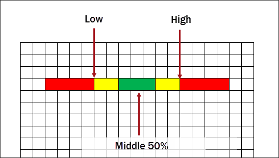
Data quality groups are used to define different high and low data quality values during various stages of a test. If, for example, your test included a warm-up and cool-down phase, your acceptable range of channel values would vary depending on the current phase. This feature uses a pass/fail mechanism, where the pass and fail ranges change at different operating points of the test. You can also use this feature to deactivate channel data quality. Data Quality groups are enabled with the DQGroupApply Data_Engine mailslot message.
Mailslot Message Syntax:
\\.\\mailslot\Data_Engine>>DQGroup Apply <GroupName>
Data Quality groups are added, modified, and deleted via the Data Quality Groups folder in Test Manager. To add and configure a group, do the following:

The following table describes the different columns of the Data Quality Group editor and their purposes.
Data Quality Group Editor Descriptions
| Column | Description |
| Channel Name | The name of the channel in the data quality group. To be displayed in the drop-down of selectable channels, the channel must have data quality already enabled and the high/low setting type defined. |
| Status | The current status of the channel. Statuses include Active or Inactive. |
| Low | The channel's low value. When this value is exceeded, the data quality violation is triggered. Supported values include a numeric value, a channel/customer/module name, or a simple expression. |
| High | The channel's high value. When this value is exceeded, the data quality violation is triggered. Supported values include a numeric value, a channel/customer/module name, or a simple expression. |
| Sigma Value | The standard deviation value. This is a reference value used to calculate the low and high values set by external tools. This field cannot be blank; if this value is unnecessary for your tests, enter 0.000. |
You can configure and use data quality for logged data files. In order to use this feature, the channel must have data quality enabled via the Edit Channel dialog and be using the High/Low data quality type.
To use this feature, do the following:
When a log is taken that includes channels with the Data Quality box checked in the LOL file, vxin_exec updates the system channel voSysLoggedDQStatus. This channel is an accumulation of all data quality range violations in all logs. To determine whether any of the logged data is out of quality, this channel should be set to "0" prior to taking a data quality log.
 |
NOTE: | Analyzing a data file for data quality only checks the last row of the file. Not the file as a whole. |
You can view data quality statuses, violations, and details in both iTest Console and AutomationPanel.
The iTest Console status bar, located at the bottom of the application, visually communicates the data quality status of your channels with data quality enabled. If channels are in data quality violation, the number of channels violating data quality will be indicated and the status color will also be reflected. A good status is reflected on the bar in gray. This field is controlled by the channel, voSysDQStatus, which you can use to prevent operators from starting a test if the value is anything other than 0. The status bar remains visible regardless of which layout is open.
Good Data Quality Status
Data Quality in Violation
You view a more detailed account of the data quality channels, their values, and their status using the Data Quality Viewer. To access this, click Tools > Data Quality from the iTest Console main menu.
Navigate to Data Viewer
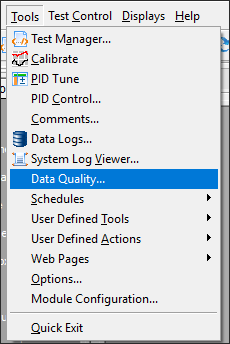
The following view displays in iTest Console, containing the channel information and configured settings.
Data Quality Viewer
By selecting the Check Logged File checkbox, a drop-down displays enabling you to view the data quality for logged data. Use the drop-down to choose a file and view its data.
Select a Log File
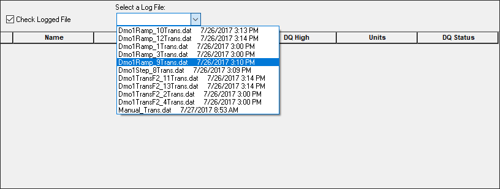
View Logged File Data
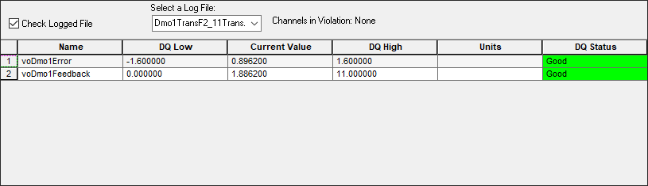
You can also view data quality on your display during runtime via the Gauge and Bar controls. To configure these settings, right-click the control to display the Properties dialog. You can then use the Data Quality tab to define the display settings.
Gauge Data Quality Configuration
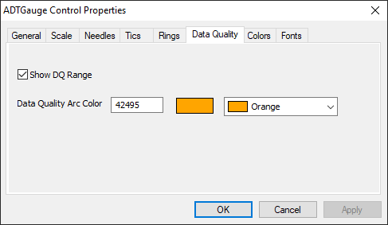
Gauge Data Quality Range
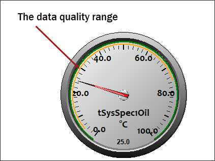
Bar Data Quality Configuration
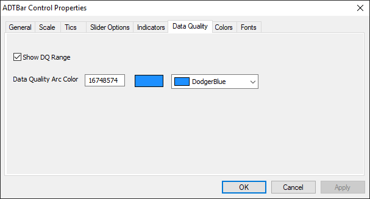
Bar Data Quality Range
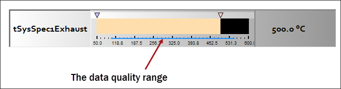
Viewing data quality is similar in AutomationPanel; there are two primary locations where you can quickly view the data quality of the enabled channels: the status bar and the data quality panel.
The AutomationPanel status bar, located at the bottom of the application, visually communicates the data quality status of your channels with data quality enabled. If channels are in data quality violation, the number of channels violating data quality will be indicated and the status color will also be reflected. A good status is reflected on the bar in black. This field is controlled by the channel, voSysDQStatus, which you can use to prevent operators from starting a test if the value is anything other than 0. The status bar remains visible regardless of which layout is open.
AutomationPanel Status Bar in Violation
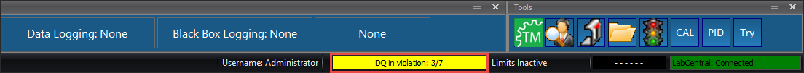
AutomationPanel Status Bar Good
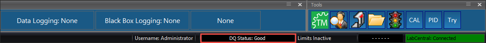
The Data Quality panel enables you to view live or logged channel data quality in table format. The panel displays information such as the DQ low value, current value, high value, units, and status. You can view the number of channels with data quality enabled and the total number of channels that are in violation.
Data Quality Panel
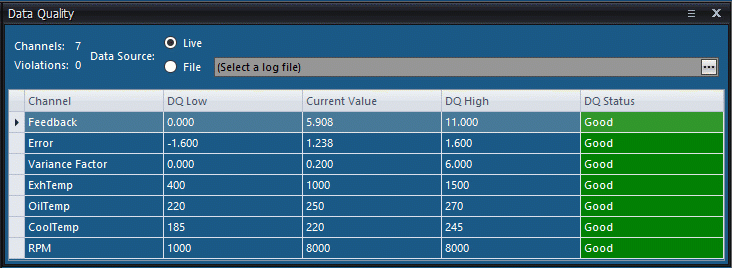
To view logged data, click the circular button next to File. Then click the button to open the file browser.
Status Bar in Violation
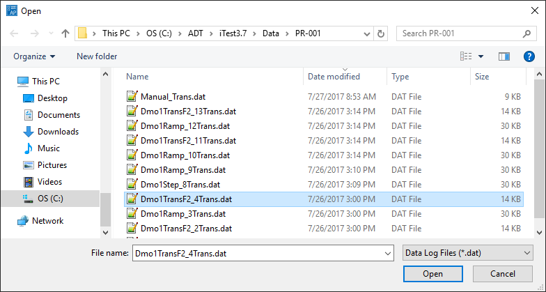
After you have selected a file, its data displays in the panel.
Logged File Data Quality
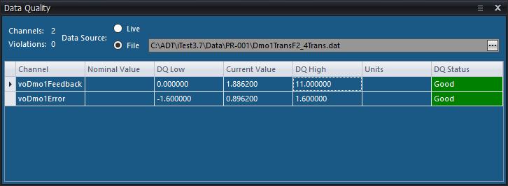
The accept/reject feature enables you to review individual data points in a data file, accept or reject the values, and enter comments. Only the last line in the .dat file is updated with the status and comment, regardless of which data point you are viewing.
To utilize this feature, the following option must be defined in the powertek.ini file, located in $SUPPORTDIR:
DQStatusChannels=statschan,commentchan
Where:
statschan and commentchan are the channels that hold the channel value and comment when you accept or reject data. These channels must be added to the LOL file designed for your tests.
When DQStatusChannels is present in the powertek.ini file, the Update Points Status button and the View Previous DQ Data field display in iTest Console's Data Quality viewer.
New Fields
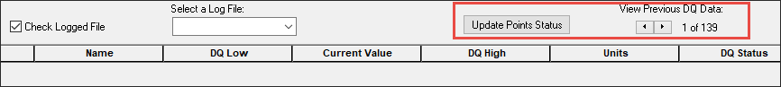
To accept or reject data in iTest Console, do the following:


Channels specified in the DQStatusChannels powertek.ini option are updated in the RDB and in the .dat file on the last line of the file.
The Data Quality feature utilizes mailslot messages to perform various actions in the iTest and AutomationPanel consoles. You can use them within your VCL procedures or as standalone messages via the Mailer tool. There are three Softpanel messages and one Data_Engine message for the data quality feature.
DATAQUALITY
The DATAQUALITY mailslot message opens the Data Quality Viewer in iTest Console. This mailslot message is not compatible with AutomationPanel.
Syntax:
\\.\\mailslot\Softpanel>>$DATAQUALITY
DATAQUALITYCLOSE
The DATAQUALITYCLOSE mailslot message closes the Data Quality Viewer in iTest Console. This mailslot message is not compatible with AutomationPanel.
Syntax:
\\.\\mailslot\Softpanel>>$DATAQUALITYCLOSE
DATAQUALITYFILE
The DATAQUALITYFILE message opens the specified file in iTest Console's Data Quality viewer; when this mailslot message is used in AutomationPanel, it opens the specified file in the Data Quality panel.
Syntax:
\\.\\mailslot\Softpanel>>$DATAQUALITYFILE;<FileName>
DQGroup Apply
The DQGroup Apply command enables you to activate different Data Quality Groups during a test. The group name indicated in the command is activated.
Syntax:
\\.\\mailslot\Data_Engine>>DQGroup Apply <GroupName>